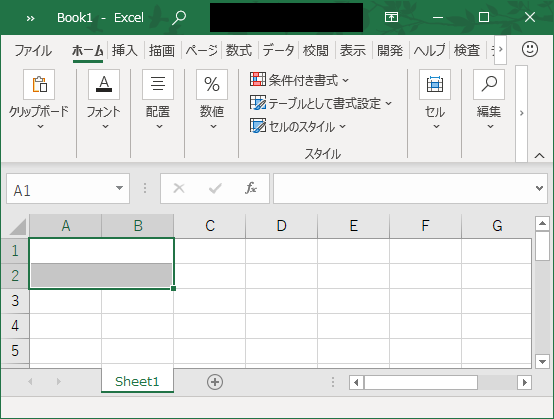

こんにちは、Office サポート チームの中村です。
今回の記事では、Excel 2016 以降でプログラムから結合セルをコピーするときの動作の変更内容について記載します。
(Excel 2016 以降とは、Excel 2016 / Excel 2019 / Microsoft 365 の Excel を指します。)
1. 現象
Excel 2013 までのバージョンでは、プログラムで結合セルの一部を指定してコピーし、コピー元と同じ範囲のセルが結合された場所に貼り付けることができていました。Excel 2016 以降のバージョンでこの操作を行うと、「この操作を行うには、すべての結合セルを同じサイズにする必要があります。」とエラーが表示されます。
この動作が生じる手順のサンプルを以下に記載します。
手順
1. Excel で新規ブックを作成し、A1-B1 セル、A2-B2 セルをそれぞれ結合します。

2. Visual Basic Editor (VBE) を起動し、以下のサンプル コードを追加します。
Sub Sample()
ActiveSheet.Range("A1").Copy
ActiveSheet.Range("A2").PasteSpecial xlPasteValues
End Sub3. Sample() を実行すると、以下のエラーが表示されます。

※ Excel 2013 までの動作では、A2-B2 の結合セルに、A1-B1 セルの値が貼り付けられていました。
2. 変更の説明
従来の動作では、Excel 内部でプログラムで指定されたセルの結合状態を暗黙的に判断してコピー範囲を自動的に拡張していました。(サンプルの動作の場合、A1 セルは A2 セルと結合されている、ということを判断し、横 2 つ分の結合セルをコピー範囲として貼り付け動作を行っていました。)
しかしながら、この暗黙的な範囲の判断処理がパフォーマンスの低下に影響を与えていました。一方で、本来 Copy メソッドの適切な使用方法としては、Range オブジェクトでコピー範囲全体を指定するものであることから、この暗黙的な結合範囲の判断を期待するシナリオは多くないと判断し、その他の適切な Copy メソッドの利用を行っているプログラムのパフォーマンス改善を目的として、暗黙的な範囲拡張を行わないよう Excel 2016 で動作を変更しました。
3. 対応方法
コピーを行うときに、結合セル全体を Range オブジェクトに指定します。
結合セルの範囲が動的に変化する場合などには、Range.MergeArea プロパティで結合範囲を取得できます。
Range.MergeArea プロパティ (Excel)
https://docs.microsoft.com/ja-jp/office/vba/api/excel.range.mergearea
先程のサンプル コードを MergeArea を使用した回避コードに変更すると以下のようになります。
Sub Sample()
ActiveSheet.Range("A1").MergeArea.Copy
ActiveSheet.Range("A2").PasteSpecial xlPasteValues
End Sub補足
貼り付け時には、結合セルの範囲が異なる場合にエラーとするために範囲の判断処理を行うので、結合セルの一部を指定しても引き続き暗黙的な範囲の判断が行われ、正常に動作します。ただ、メソッドの使用方法としてより適切な実装としては、PasteSpecial も同様に結合範囲全体を設定します。
ActiveSheet.Range("A2").MergeArea.PasteSpecial xlPasteValues今回の投稿は以上です。
本情報の内容 (添付文書、リンク先などを含む) は、作成日時点でのものであり、予告なく変更される場合があります。